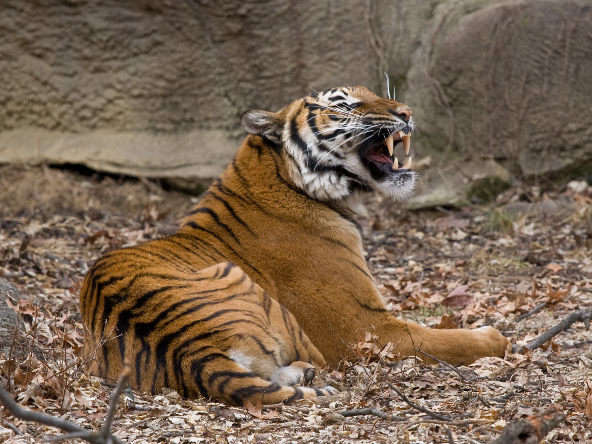

MALAYAN TIGER
About This Animal
The Malayan tiger is a tiger from a specific population of the Panthera tigris tigris subspecies that is native to Peninsular Malaysia. This population inhabits the southern and central parts of the Malay Peninsula and has been classified as critically endangered on the IUCN Red List since 2015. As of April 2014, the population was estimated at 80 to 120 mature individuals with a continuous declining trend.
In the Malay language, the tiger is called harimau, also abbreviated to rimau. It is also known as the southern Indochinese tiger, to distinguish it from tiger populations in northern parts of Indochina, which are genetically different to this population.